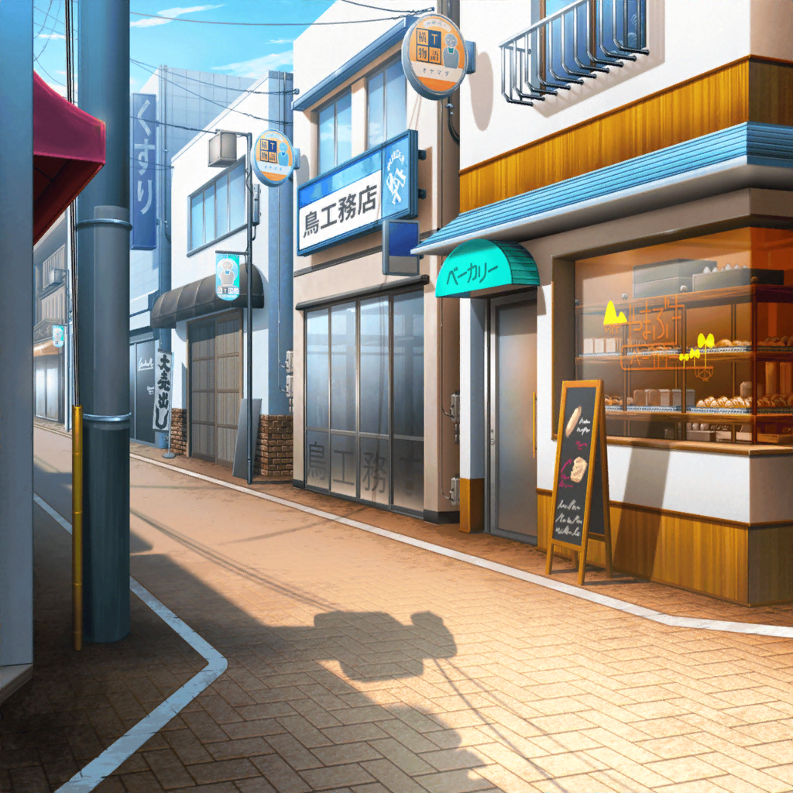
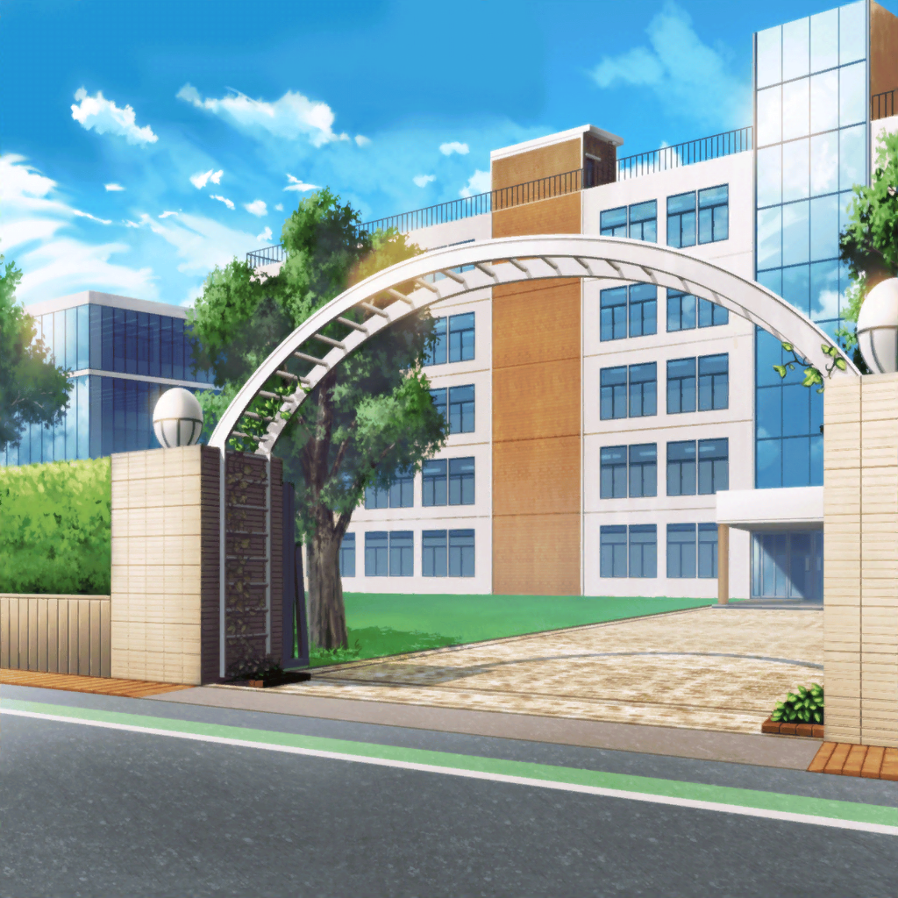
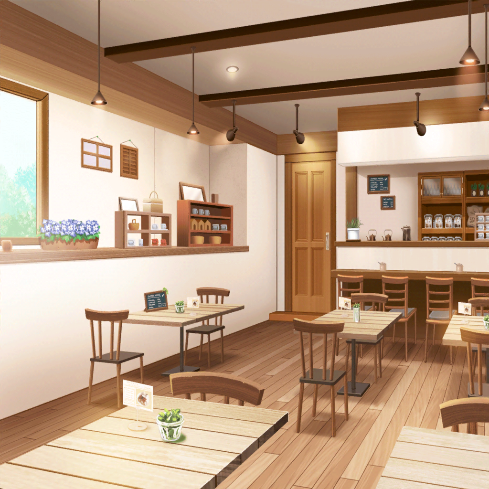
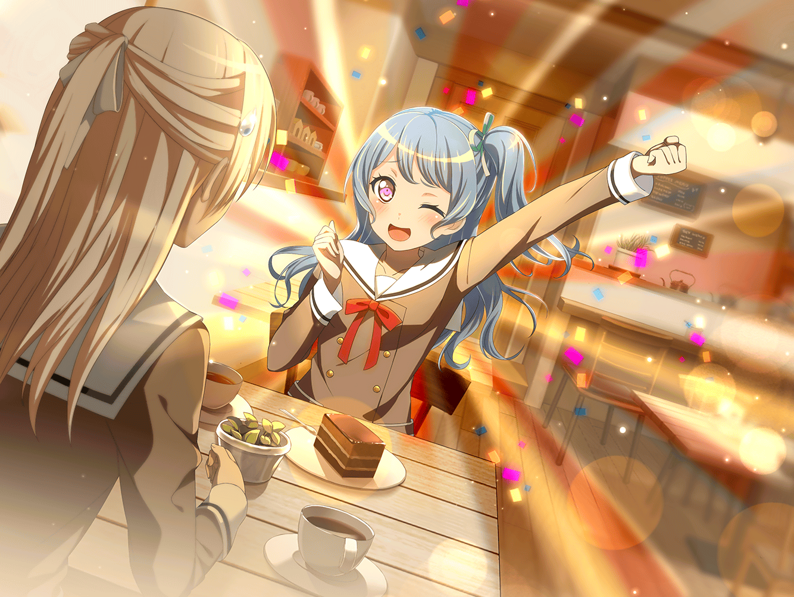

数日後
弦巻家 応接室
こころ
初ライブから初めての作戦会議ね！
今日の議題はもちろん、
——と！？
はぐみ
お、遅れてごめーーーんっ！！
花音
お疲れさま……キャプテン。
いつも大忙し……だね。
今日も練習、行ってきたの？
はぐみ
う、うん……チームは順調なんだけど、
ちょっと……病院に……
——でも大丈夫っ！ さあ、バンドしよっ
美咲
（病院？ 試合のけが人かな？）
こころ
よしっ。
はぐみもそろったし、議題を発表するわよ！ じゃん！！
もっと色んなところで、たっくさんライブしよう！！
薫・はぐみ
おーっ！
美咲
ちょっと待て！
あたしがあのイベント、どんだけ苦労して
探してきたと思ってんの？
花音
け、結成したてのバンドが出られるライブハウスは
あんまりないんだよ……！
お、お客さんがこないから……っ
こころ
どうしてお客さんが来ないってわかるの？
来るかもしれないじゃない。
それにライブを決めてきたのはミッシェルよ？
はぐみ・薫
そうだ、そうだ
美咲
あんたらの理解力のなさには、
もうむしろ感動すら覚えるよ……
花音
みんな……ミッシェルは美咲ちゃんだって
そろそろ覚えてあげようよ……
美咲
あーもう。
じゃあはっきり言うけど、お客さんが来なかったら、
ライブハウスは潰れちゃうの
美咲
潰れたら他のバンドもライブできなくなるよね？
だからお客さんを呼べるようになるまで出られない
はぐみ・こころ・薫
…………
美咲
はぁ。
おわかりいただけましたか、３バカのみなさん
花音
ちょっと冷たいけど……
それが現実、なんだよね……
こころ
うん。……うんっ！！
よーーーっく、おわかりいただけたわっ
美咲
よし。それなら良かった。
じゃああたしはそろそろバンドを抜け……
こころ
お客さんが来るのを待つんじゃなくて、
あたしたちが行けばいいってことね！！
美咲
……は！？ な、なんでそうな……っ
こころ
さっそくライブハウス以外で
ライブできるところを探すわよっ。
みんな手伝ってくれるかしらっ
美咲
あれ？ でもライブハウスに出られないから
路上から始める……
みたいなセオリーと一緒なのかな？
花音
ほんと……だね。
そう言われると、いい方法なのかも
薫
また私のポスターを作ってもいいんだよ？
はぐみ
いっちだんけつ！ だね！
ハッピー！ ラッキー！ スマイル！ イエーイ！！
美咲
いや、あたしはそろそろ抜け……
こころ・薫・花音
ハッピー！ ラッキー！ スマイル！ イエーイ！！
こころ
さあさあ。
片っ端から、世界を笑顔にしていくわよっ！！
美咲
……い、いつまで付き合うのこれ……

公園
こころ
みんなこんにちは～！！
あたし達、ハロー、ハッピーワールド！
一緒に笑顔になろうね～～～っ！
子供たち
あーっ！ こころちゃん！
こころちゃんだーーー！！
こころちゃん大好きーーー！
ミッシェル
なにこれ。子供に好かれ過ぎ！

商店街
はぐみ
やっほー！ 商店街のみんなっ！！
はぐみバンド組んだんだよ～！！
巴
へぇ。ＤＪがいるのか。面白いな
商店街の大人たち
はぐみちゃーーーん！！
香澄
いつか一緒にライブ、やりたーい！
ミッシェル
はぐみの地元での集客力、すご……！

羽丘女子学園 校門前
薫
さあ子猫ちゃん達。
私が組んだバンドを紹介しよう。
聴いてくれ。ハロー、ハッピーワールド！
観客たち
きゃあああああっ！ 薫さまが……ギターだなんて！
どこでやってるの！？ 全部見に行かなきゃ！
美しすぎる……はぁ
ミッシェル
薫さんの追っかけ、半端じゃない……！
こころ
ほら見て、ミッシェル！
キグルミの人は心配しすぎって伝えてちょうだい。
世界はこんなにも、笑顔であふれているわ！
ミッシェル
（なんだよ。なんか……マジで、
本当にそんな気がしてくるじゃん）
こころ
行くわよみんな！ 一緒に歌って！
～～～♪
ミッシェル
（……でも。
でもさ、こころ。あんたの言うように、
世界って本当に、どこもかしこも、こんなに優しいのかな）

数日後
羽沢珈琲店
花音
それでね、もう何度もミッシェルは美咲ちゃんだって
説明してるのに、こころちゃん達全然わからなくて。
気の毒だなって思うけど、私つい笑っちゃって……
花音
って、ご、ごめん……っ。私、しゃべりすぎたよね！
千聖ちゃん、お仕事行く時間になっちゃった！？
千聖
ううん違うの。花音、あなた少し変わったわね。
いつも私の話を聞いてくれてたけど……
花音がこんなに自分の話をしてくれて、すごく嬉しい
花音
私……変わった？
千聖
……ええ

花音
え、へへっ。本当？
じゃあやっぱり、バンドのおかげかも……っ！
ハッピー！ ラッキー！ スマイル！ イエーイ！！
千聖
……ハッピー、ラッキー……？
花音
バンドの掛け声なんだっ。
千聖ちゃんも一緒にやる？
ハッピー！ ラッキー！ スマイル！ イエーイ！！
千聖
……え、遠慮させてもらうわ